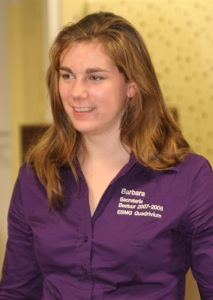

Leeftijd:
24
Studie:
Sociaal Pedagogische Hulpverlening
Instrument:
Zang & Klarinet
Ondervereniging:
Auletes en Vokollage
Status:
(Vrij) gezellig ;-)
Wordt geil van:
Motor geluiden
Begint te watertanden van:
Pizza!!
Verslaafd aan:
Zingen
Barbara van Leeuwen
Secretaris ESMG Quadrivium
Terug naar de groepsfoto